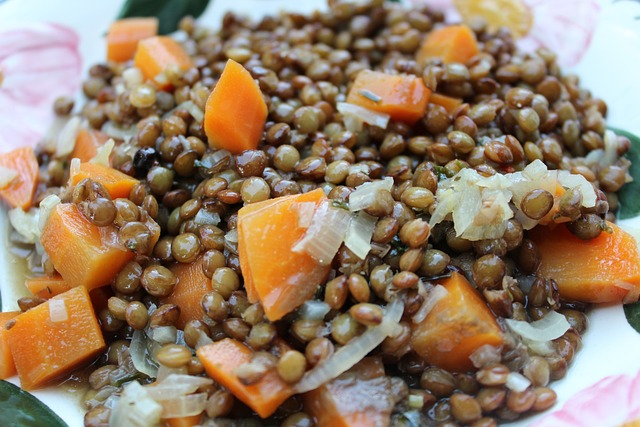

Home
Adasi (Persian Lentil Soup)

Description
Adasi is a traditional Persian lentil dish known for its warmth,
simplicity, and comforting flavor. Made with slow-cooked lentils,
caramelized onions, and a blend of turmeric and spices, this version
adds a drizzle of olive oil and a squeeze of lemon for extra depth.
It’s a hearty, wholesome, and flavorful meal that's perfect for
breakfast, lunch, or a light dinner—especially with warm flatbread on the side.
Ingredients
- Green or brown lentils – 1 cup (rinsed)
- Onion – 1 large, finely chopped
- Garlic – 2 cloves, minced
- Potato – 1 medium, peeled and diced (optional but traditional)
- Turmeric – 1 tsp
- Cumin – ½ tsp
- Salt – to taste
- Black pepper – to taste
- Olive oil – 2 tbsp
- Water or vegetable broth – 4 cups
- Lemon juice – 1 tbsp (optional, for serving)
- Flatbread – for serving (optional)
Steps
- Heat 1 tbsp of olive oil in a pot over medium heat.
- Add chopped onions and sauté until golden and caramelized, about 10–12 minutes.
- Add minced garlic, turmeric, and cumin. Stir for 1–2 minutes until fragrant.
- Add lentils, diced potatoes, and water or broth. Bring to a boil.
- Reduce heat to low, cover, and simmer for 30–40 minutes, or until lentils and potatoes are tender.
- Season with salt and pepper to taste.
- Drizzle with remaining olive oil and a squeeze of lemon juice before serving, if desired.
- Serve hot with flatbread on the side.